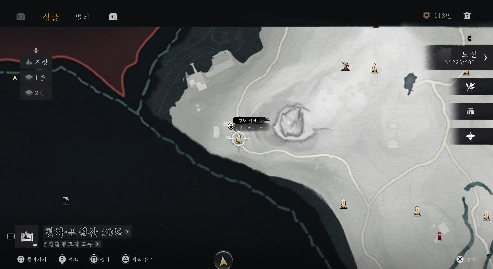

구현 검술의 성지
귀문 시장은 구현 검술을 사용한다면 필수적인 심법을 얻을 수 있는 곳이라 반드시 진행하는 것이 좋습니다.
또한, 특유의 몽환적이고 비밀스러운 분위기가 정말 좋기 때문에 시장이 열릴 때 꼭 가보시는 걸 추천합니다.

진입 방법: 강변 역참에서 시작된 인연
- 먼저 강변 역참 결계석으로 이동합니다.
- 바로 앞 현상 게시판 쪽에서 한 무리가 대화하는 것을 엿듣습니다.
- 대화를 다 들은 후, 근처에 있는 노인과 대화합니다.
- 노인이 침식의 숲에 있는 한 사원으로 가라고 안내합니다.
- 해당 지역(침식의 숲 사원)으로 이동하여, 다시 왼쪽 건물의 대화를 듣습니다.
- 이후 벌어지는 전투를 마치면 귀문 시장으로 끌려가게 됩니다.


💡 진행 팁
대화 트리거가 잘 작동하지 않을 경우, 결계석을 통해 지역을 다시 로드하거나 주변을 조금 더 탐색해보세요. 전투 준비를 단단히 하고 가는 것이 좋습니다.